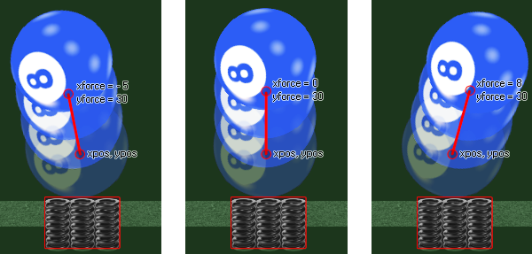

physics_apply_force(xpos, ypos, xforce, yforce
| Argument | Description |
|---|---|
| xpos | The x coordinate in the room where the force will be applied |
| ypos | The y coordinate in the room where the force will be applied |
| xforce | the x component of the force vector |
| yforce | the y component of the force vector |
Returns : N/A
When working with physics you need to apply not only gravity to objects, but forces as well. A force is any influence that causes an object to undergo a change in speed, a change in direction, or a change in shape,
and is defined in the GameMaker:Studio physics world the same as we define gravity, by getting the vector from the two xforce/yforce components. It should be noted that forces are not applied to the
center of mass of the object, but rather at a point in the room and they will change the direction and speed as well as the torque (spin) dependant on any other forces that are working on the object (like gravity).
Here is an example image to help illustrate:

In the above example the spring object at the bottom has created a force on the ball object getting it to move in a different direction. The exact force is defined by the vector we get from the components xforce/yforce
in relation to the xpos/ypos coordinates - which simply means that the force is calculated as the distance from xpos/ypos to xforce/yforce in Newtons (a Newton being defined as the amount of net force required to
accelerate a mass of one kilogram at a rate of one meter per second squared)and the direction is the angle that we get from xpos/ypos to xforce/yforce. The code for a collision like the above would go in the collision
event of the spring object and would look something like that provided in the example below.
NOTE : The physics world uses metres for all its calculations, and the ratio of pixels per metre is defined in the room editor or using
physics_world_create.
with (other)
{
physics_apply_force(x, y, 0, -30);
}
The code above will apply code to the other object in the collision with a force of 30 Newtons and a direction.